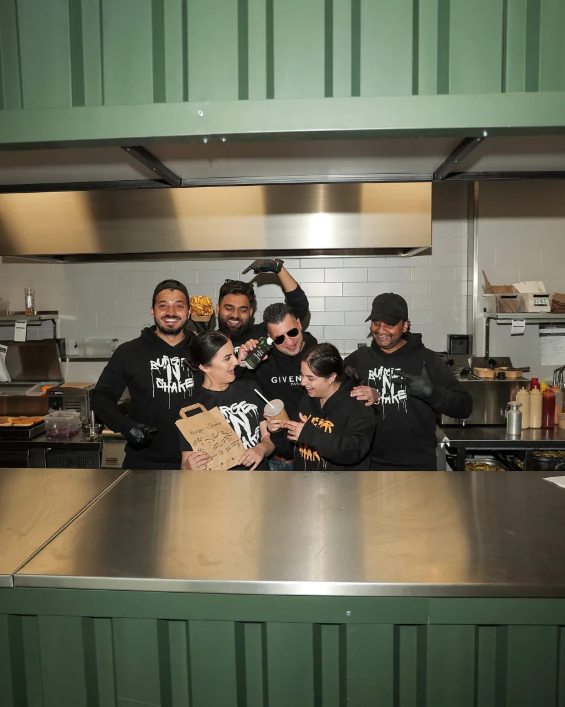
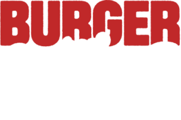
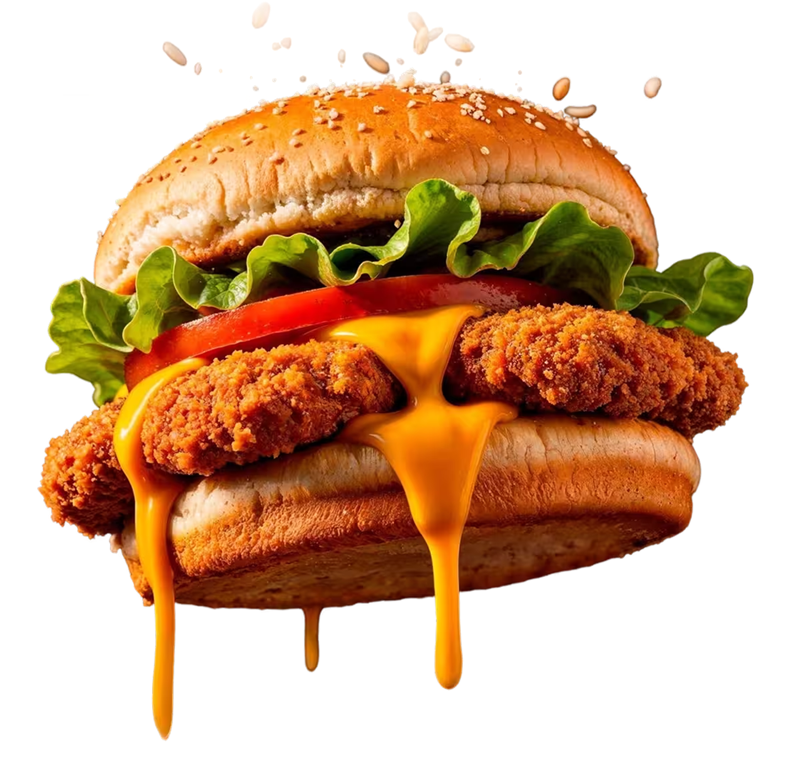
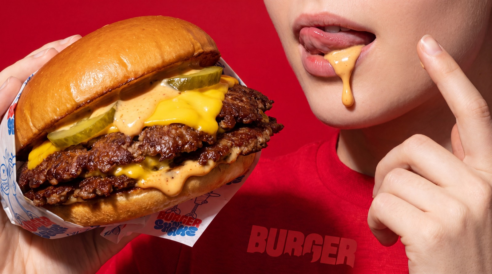
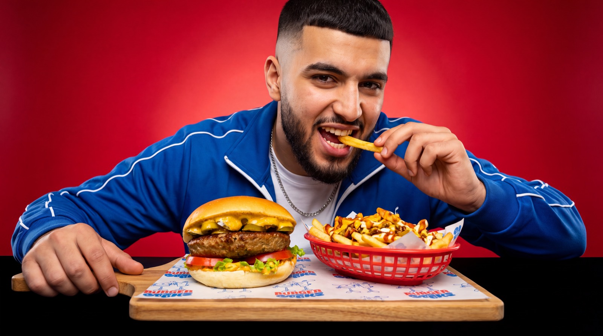
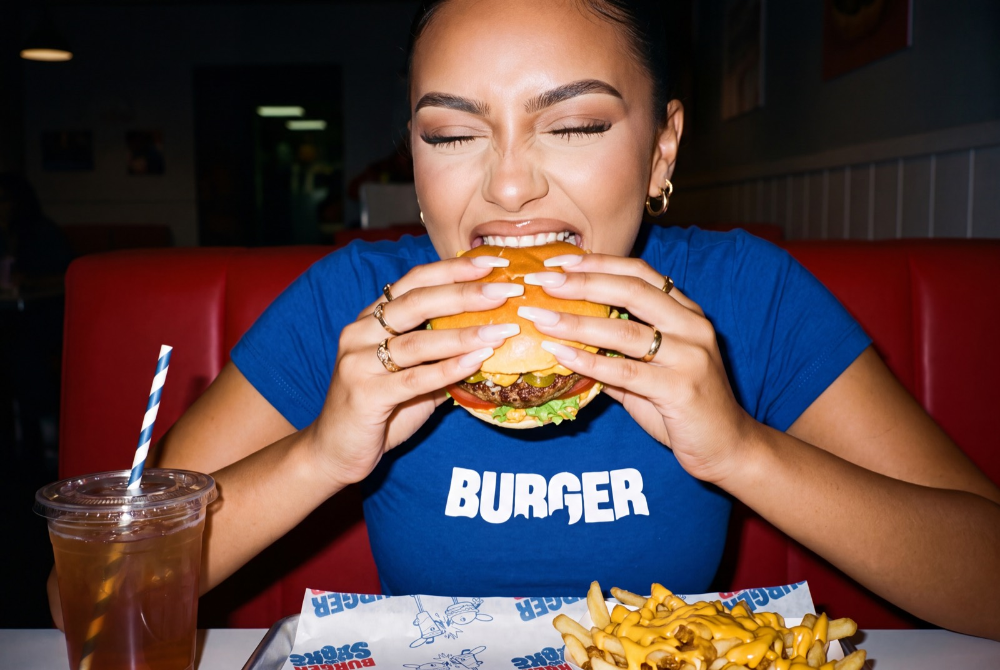
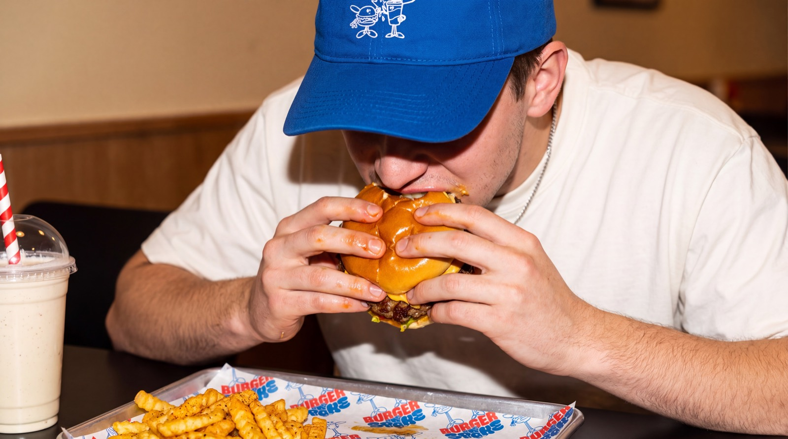
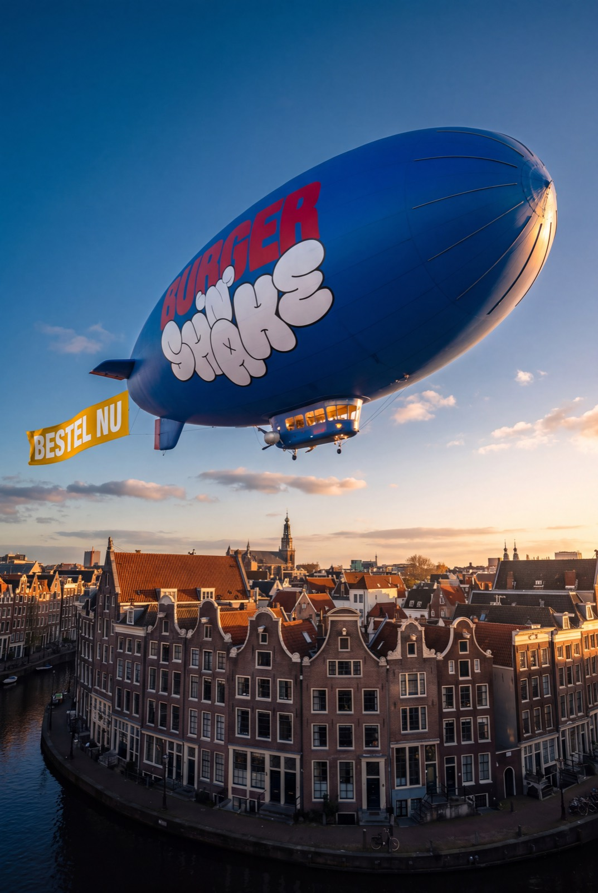
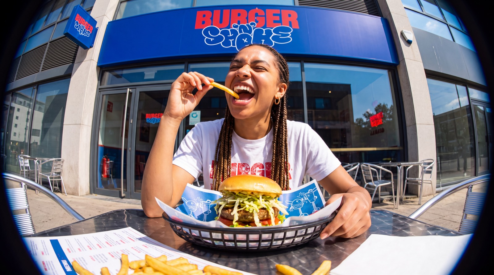

Bestel nuBurger 'n Shake begon vanuit een liefde voor goed halal eten, uitgesproken smaken en een plek waar iedereen zich welkom voelt. Ruim tien jaar later zijn we uitgegroeid tot 15+ locaties in Nederland en Marokko, maar onze ambitie is nog steeds hetzelfde: American streetfood maken waar je voor terugkomt.
Juicy burgers van de bakplaat, crispy chicken, verse friet, huisgemaakte sauzen en romige shakes. Ook bij Burger 'n Shake Zoetermeer draait het om goed eten, goede energie en: Good Burgers = Happy People.






